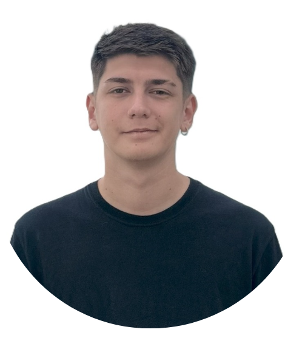

Tomás Fernández

Datos Personales
- Nombre y apellidos: Tomás Fernández
- Fecha y lugar de nacimiento: 15 de marzo de 2001, Vicente Lopez, Buenos Aires, Argentina
- Dirección: Olazabal 973, Boulogne, Buenos Aires, Argentina
- Teléfono de contacto: (+54) 9 11 5611-2345
- Correo electrónico: tomas.fernandez@gmail.com
Formación Académica
| Titulación |
Centro de Estudios |
Fechas |
| Ingeniería en Sistemas Informáticos |
Universidad Abierta Interamericana |
Marzo 2023 - Actualmente |
| Tecnicatura en Analista de Sistemas |
Universidad Abierta Interamericana |
Egresado |
| Bachiller en Economía y Administración |
Colegio Leonardo da Vinci |
Egresado en 2019 |
Experiencia Profesional
The Dog Footprint
Puesto: Analista de Procesos y Operaciones
Localidad: San Isidro, Buenos Aires
Fechas: Febrero 2021 - Actualmente
- Atención directa a clientes corporativos y canalización de pedidos de productos promocionales.
- Diseño y armado de bocetos digitales para productos personalizados, y coordinación integral de la logística.
- Gestión operativa completa: control de stock, proveedores, entregas y postventa.
- Desarrollo de un Sistema de Gestión de Pedidos de Merchandising, utilizado internamente para optimizar la operación.
Idiomas
- Inglés: Nivel Intermedio (B2).
- Lectura: Alto
- Habla: Medio
- Escritura: Medio
Informática
Nivel de conocimientos: Experto.
Programas y Tecnologías manejadas:
- Lenguajes: C, C#, Python, JavaScript, HTML, CSS.
- Bases de Datos: SQL / MS SQL Server.
- Herramientas y Frameworks: Git/GitHub, .NET Framework, Windows Forms, Paquete Office.
- Otros: Modelado UML y documentación técnica.
Cursos y Proyectos:
- Proyecto Front-End (Talento Tech 2024): Desarrollo de sitio web responsive con HTML, CSS y JavaScript.
- Curso de Python (CoderHouse 2022): Desarrollo de aplicación web con arquitectura basada en MVC de Django.
- Sistema de Gestión de Pedidos: Proyecto de tesis (Analista en Sistemas) con arquitectura en capas y bases relacionales.
Gustos y Preferencias
- Hobbies y Actividades: Armado de computadoras, ciclismo de montaña y programación de automatizaciones para el hogar.
- Libros: Literatura de ciencia ficción y ensayos sobre innovación tecnológica.
- Películas: Cine de ciencia ficción, thrillers de misterio y documentales de tecnología.
Detalles sobre mí
Soy un profesional apasionado por la tecnología y el desarrollo de soluciones innovadoras. Me gusta aprender nuevas tecnologías y aplicarlas para resolver problemas complejos. Tengo una sólida base en programación y diseño de sistemas, y siempre busco mejorar mis habilidades para ofrecer el mejor servicio posible.